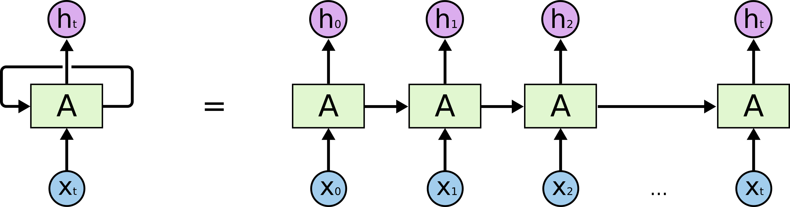
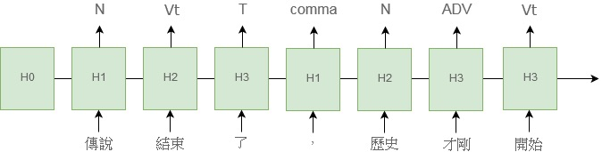
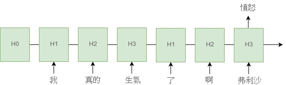

RNN
Table of Contents
1. What is RNN
言歸正傳，RNN 到底是個什麼玩意兒? 就讓我先從傳統的類神經網路切入吧。1
傳統上，我們假設神經網路的每個輸入是相互獨立的，意即對於輸入 \(I_i,I_j\) 而言，\(I_i\) 取什麼值，並不會影響 \(I_j\) 取什麼值，因為 \(I_i\) 與 \(I_j\) 一點關係也沒有。但這個假設有個很大的缺點，就是在處理序列 (Sequence) 時不太管用，因為序列內的元素長幼有序、先後有別，這種順序性導致了輸入間彼此相依。
打個比方吧，股票走勢就是種典型的數值序列：
| 9：00 | 10：00 | 11:00 | 12:00 |
| 123 | 128 | 132 | 136 |
如果有人問：「不知道下午一點是會漲還是會跌」，我們多半會回答：「當然會漲，因為九點在漲，十點在漲，十一點也在漲」。先姑且不論這麼武斷會不會讓我們賠錢，當我們想預測十二點的股市指數時，不是選擇隨手丟枚骰子，而是選擇參考以前的股市指數，就說明了十二點當下的指數與十二點前的股票指數其實是有相依性的。
再以文字序列舉個例子，比如說同樣都是用到了「不」、「歡」、「喜」這三個字，但「喜歡不?」是一個男孩切切於心的期盼，而「不喜歡。」則是女孩流水無情的漠然。這兩組序列有相同的構成，卻因順序，而讓彼此的結局殊如雲泥。
2. RNN 原理
為了能將「順序」這個信息融入神經網路，RNN 就這麼誕生了，它的式子並不複雜：
\(h_t=\sigma(W_hx_t+U_hh_{t−1}+b_h)\)
先理解一下每個符號的意思：
- \(h_t\): RNN 在第 \(t\) 個時間點的輸出，如果對時間點這個字眼感到茫然，不妨理解為 RNN 讀到序列中第 \(t\)
個元素時的輸出吧
- \(x_t\): RNN 在第 \(t\) 個時間點的輸入
- \(h_{t−1}\): RNN 在第 \(t−1\) 個時間點的輸出
- \(W_h, U_h, b_h\): 是 RNN 的參數，我們要微調的目標
- \(\sigma\): 神經元的激活函數
你會發現 RNN 其實是兩個單層網路 \(W_hx_t\) 和 $U_hh_{t−1}$的串接，只是這兩個網路的用途不太一樣，
從物理意義上來看：
- \(W_h\) 是在控制當前時間點的輸入 \(x_t\) 如何影響當前時間點的輸出 \(h_t\)
- \(U_h\) 則是控制前一個時間點的輸出 \(h_{t−1}\) 如何影響對當前時間點的輸出 \(h_t\)
我們能自這兩者間窺探出 RNN 的核心精神，對於一組序列 \(x_1,x_2,…..,x_{n−1},x_n\)
- 在第 \(k\) 個時間點時，我們有 \(h_{k−1}\) 保留了 \(x_1,x_2,…..,x_{k−1}\) 的資訊，佐以當前時間點的輸入 \(x_k\) 得出了 \(h_k\)
- 現在我們到了第 \(k+1\) 個時間點，有 \(h_k\) 保留了 \(x_1,x_2,…..,x_k\) 的資訊，佐以當前時間點的輸入 $x_{k+1} 得出 \(h_{t+1}\)
- 如此反覆迭代，直到走至第 \(n\) 個時間點便結束。
以一個比較打嘴砲的說法，我們能將 $h_k$當成記憶，目前的記憶是由以前的記憶 \(h_{t−1}\) 和目前的輸入 \(x_t\) 摻雜而成，至於迭代就是在傳遞模型記憶，這個過程能用簡單的虛擬碼形象化：
1: x_inputs = [...] 2: hidden = h0 3: 4: for x in x_inputs: 5: hidden = rnn(x, hidden)
我們也能把 RNN 的結構畫成一張圖，橫向的箭頭便是建構出順序的關鍵。

Figure 1: RNN 結構圖
此外，根據上面這張圖，我們能將 RNN 的輸入與輸出關係更細分幾種情形。
假設我們給 RNN 餵進一個長度 \(N\) 的序列 \(x_1, x_2, ..., x_n\)，RNN 會吐出與長度等長的序列 \(y_ y_2, ..., y_n\)，但對於吐出的序列 \(y_1 ~ y_n\)，我們真的會用到所有的輸出嗎 ? 答案應該是不一定，對不同的應用，我們採用的輸出個數也會不同。
如果把全部的輸出都拿來用，便是很典型的序列標注問題，比如說我們想標注一句話裡每個詞的詞性或實體，就會希望每一個輸入都能被標上一個 tag：

Figure 2: 用 RNN 來標注一句話的詞性
如果只把部分輸出拿來用，就會比較像是個分類在做的事。我們通常會取用最後一個時間的輸出，用於對整個序列做出總結，比如想去識別對話的意圖或情緒，我們通常都必須要看完整句話再做論斷。

Figure 3: 用 RNN 來分類一句話的情緒
理解上述兩種情形後，我們也看出了 RNN 存在著一個侷限性，即是輸出的長度會受限於輸入的長度，我們甚至能夠斷言：「對於輸入長度為 N 的序列而言，是沒有辦法吐出長度超過 N 的輸出的。」不過，這又會造成什麼困擾呢?
想像一下，今天老闆突發奇想，立志開發出一套中英翻譯系統，企劃書上洋洋灑灑地寫滿了 RNN、Deep learning、Neural machine translation 等看起來超有深度的關鍵字，並附上了一組簡單的翻譯範例：
| 英文 | 中文 |
| An apple a day keeps the doctor away | 一天一蘋果, 醫生遠離我 |
輸入與輸出對不上，解決方案：Sequence to Sequence
3. 遞迴類神經網路(Recurrent Neural Networks, RNNs)
RNN 能夠處理「任意個數的輸入序列」，所以十分適合用在「語言塑模」或「語音辨識」。理論上，RNN 可以用來處理任何問題，因為已被證明具有「圖靈完備性」(Turing-Complete)。以遞迴關係的函數表示 RNN 可將其視為 \(S_t=f(S_{t-1},X_t)\)，這裡的\(S_t\)表示第\(t\)步的狀態，它是由函數\(f\)對上一步(\(t-1\))的狀態(即\(S_{t-1}\))與這一步的輸入\(X_t\)所計算出來的結果，這裡的函數\(f\)可以是任何可微分的函數，如\(S_t=tang(S_{t-1}*W+X_t*U)\)。
正因為每個狀態都會與之前所有的計算有關，其所代表的重要含義為：隨著時間的推移，RNNs 可以說是有記憶力的，因為狀態 S 包含了之前所有步驟的資訊。
語言塑模的目標是計算「字的序列」的機率，這在「語音辨識」、OCR、「機器翻譯」、「拼字校正」上都非常重要。以「字」為基準的「語言模型」是由「字的序列」來定義機率分佈，給定一個長度為\(m\)的字序列，它會為整個字序列給定一個機率\(P(w_1,...,w_m)\)，其「聯合機率」(joint probability)可以由公式\eqref{org39f5fc3}中的連鎖規則(chain rule)計算出來：
這個聯合機率一般是基於一個「獨立性假設」(independence assumption)，即，第 i 個字只會相依於它之前的 n-1 個字，如果我們的模型是連續 n 個字的聯合機率，就稱為「n元」(n-gram)。例：
- 1-gram / unigram: “The”, “quick”, “brown” and “fox”
- 2-grams / bigram: “The quick”, “quick brown” and “brown fox”
- 3-grams / trigram: “The quick brown” and “quick brown fox”
- 4-grams: “The quick brown fox”
現在，如果我們有一個巨大的語料庫(corpus of text)，我們就可以用一個特定的 n(通常為 2-4)搜尋所有「n元」在「語料庫」中出現的次數，進而在「給定前 n-1 個字的前提下」，估計出每個 n 元中最後一個字出現的機率。
4. 三種 RNN
- Simple RNN
- LSTM
- GRU: 參數較少，但 performace 不優，反而不如 LSTM 普遍